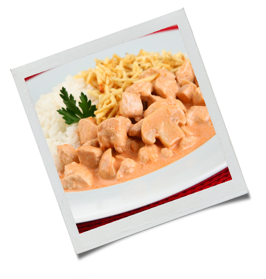

1 pacote de filé de frango cortado em cubos

1 pacotinho de molho de tomate
Mostarda
Catchup
1 lata de creme de leite
1 pote pequeno de champignon
Água

Coloque na panela o filé em cubos e tempere como desejar, com alho, sal e pimenta-do-reino, sem exagero, apenas para dar sabor;
Refoge o frango, coloque o molho de tomate, duas colheres de sopa de mostarda e duas de catchup, coloque também o champignon e adicione água até que cubra o frango;
Mexa e deixe engrossar;
Tire o soro do creme de leite, com um furo no fundo da lata e deixe escorrer. Caso seja de caixinha, faça o mesmo;
Depois de grosso, adicione o creme de leite e mexa novamente.
Deixe cozinhar de 7 a 10 minutos;
Não deixe muito, pois o creme de leite pode talhar.